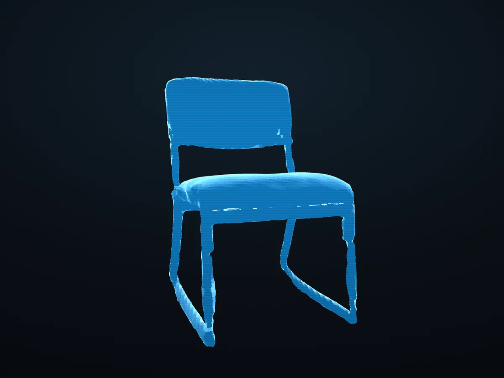

Aim
Point your index finger and curl the other three. The ring follows your fingertip.
Try it →Gesture demo
Hologram Workshop
Scan something with your phone, then grab it, turn it, measure it and take it apart, all in the browser.
No install. Works with a mouse too. The camera stays on your device.

The real scanned chair · drag to turn
What you can do
Every pose means one thing, everywhere on the site. Each card shows the move; Try it opens the page where it works.
Point your index finger and curl the other three. The ring follows your fingertip.
Hold a fist with one hand, then raise or lower the other. The front edge tips.
Pinch with both hands, then spread them apart or bring them together to resize.
Clap once to put everything back. Changed your mind? Undo brings it back.
Hold ✌ for a moment and a wheel of tools opens. Aim at one, pinch to pick.
Hold ✌ and pick ↑ Undo on the tool wheel, or press U / Ctrl+Z. A thumbs-down shortcut is coming.
Pinch at one point, hold, and let go at another. The real-world distance shows.
See the mesh under the lens; hide or mark faces. Pinch-hold and move up or down to resize it.
Your saved scenes float in a ring. Fist-drag to spin it; aim and pinch to open one.
Drop in a scan from Scaniverse or Polycam (GLB, glTF, OBJ, PLY). It never leaves your browser.
Fills in what the scanner missed, like a chair's underside. Filled-in surfaces are always marked as inferred.
Add a photo for a flat preview now; the offline tool turns it into 3D, marked 100% inferred.
Everything to try
A hologram you move with your bare hands: point, grab, tilt, scale, explode, clap. A 3D hand mirrors yours, the ✌ tool wheel holds the tools, and the tape measures real sizes. 13 objects to switch between.
Your own scans as holograms: a Library ring, grab / twist / resize by hand, pins, the polygon lens, and filled-in surfaces marked as inferred. It remembers where you left off.
Light painting, Rebuild the chair, Block tower and Marble maze. One player, or two taking turns on one camera.
A short calibration fits the pointer to your reach, then Selection practice scores how well each click method works for you.
The raw view: the camera with your 21 hand points and what the tracker thinks each hand is doing.
The original viewer: the scanned chair as a hologram, turned with the mouse. Where the project started.
For the curious: the test benches behind the gestures. Replay lab (every gesture scored), gesture lab, pointer lab, hold lab, smoothing lab.
Before you start
Private by design. Hand tracking runs inside your browser. No video, photo or scan leaves your device, and there are no accounts, ads or analytics.